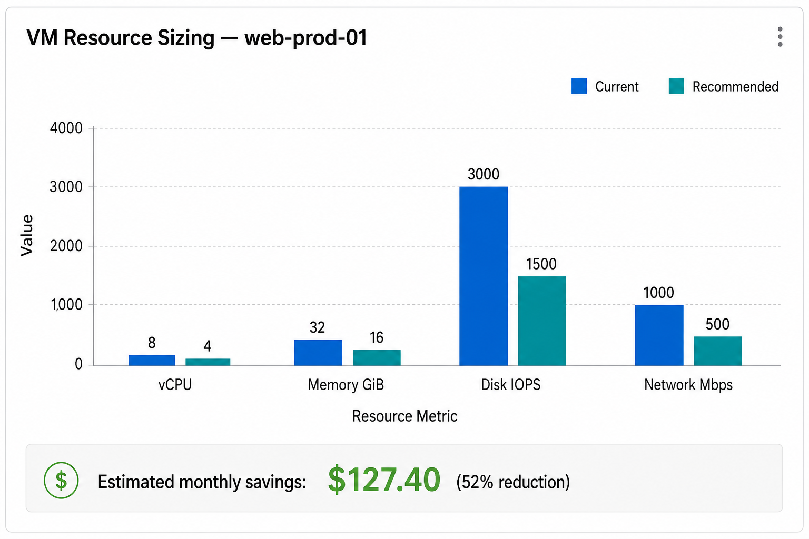
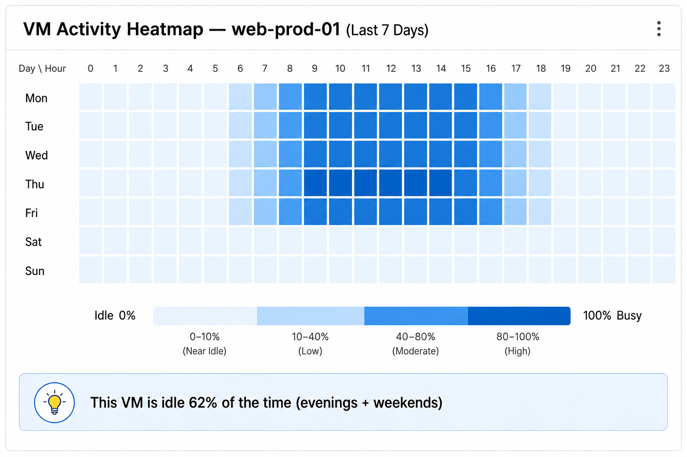
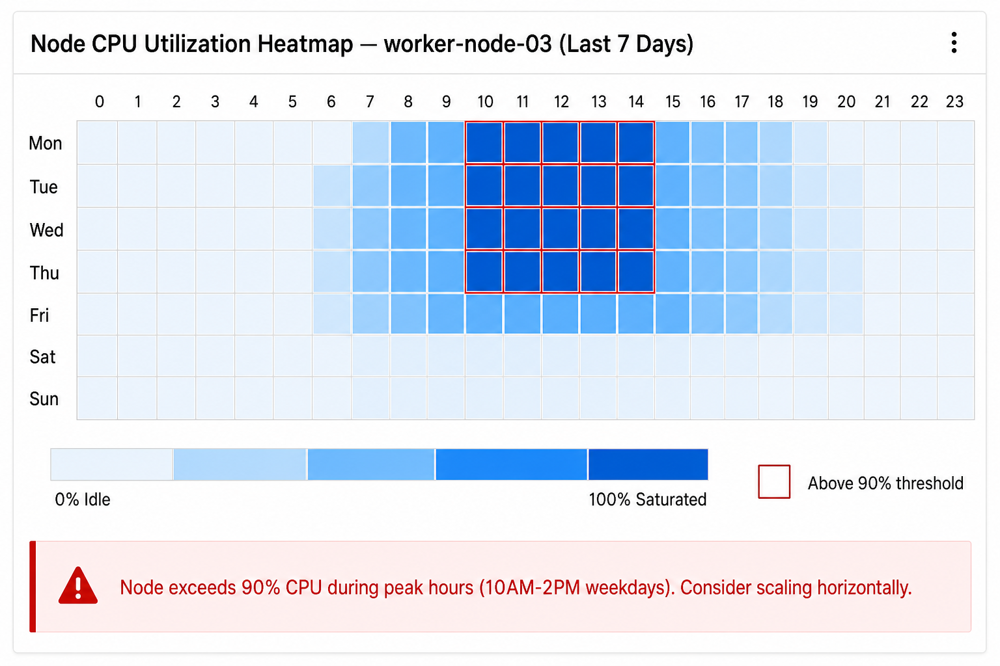
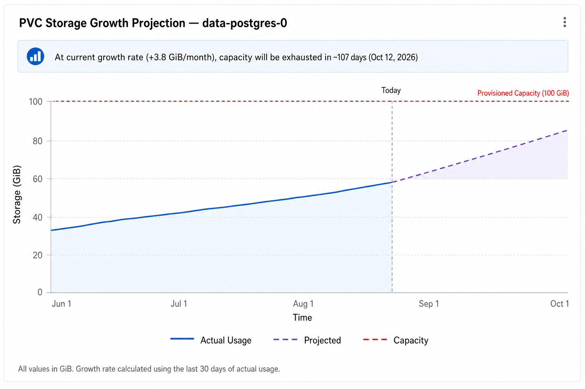

Visual Insights (Shipped)¶
Status: Complete — All Phases Shipped
Visual Insights adds charts, gauges, and heatmaps to recommendation detail pages across all entity types. Phase 1 (Tier 1), Phase 2 (Tier 2), and most of Phase 3 (Tier 3) are now fully implemented. All visualizations listed below are shipped unless explicitly marked otherwise. The only remaining planned item is sparklines in list views.
Quick Facts
Scope: Charts and diagrams for all ROS recommendation entity types
Backend changes: Tier 1 requires minimal changes (OOM timeline endpoint + throttle field in boxplots); Tier 2 adds two hourly tables (~281 MB at medium scale)
Charting library: PatternFly Charts (@patternfly/react-charts / Victory)
Feature-gated: Yes — resource-intensive features (heatmaps, sparklines) are individually toggleable
ADR: 0301-visual-insights-dashboard
Why Visual Insights?¶
Today, ROS recommendation pages show numeric tables — current values, recommended values, and percentage deltas. While accurate, this format makes it hard to:
- Spot patterns — Is the VM idle every night? Does CPU spike on Mondays?
- Build confidence — Is the recommendation based on a stable trend or a one-off spike?
- Project forward — Will this PVC run out of space in 30 days or 6 months?
Visual Insights adds charts and diagrams that answer these questions at a glance, using data the system already collects.
Phase Overview¶
| Phase | Effort | What Ships | Backend Changes |
|---|---|---|---|
| 1 (Tier 1) | Low | Charts using existing API data | None |
| 2 (Tier 2) | Medium | Heatmaps, overlay charts | 2 new tables (~200 lines Go + 1 migration each) |
| 3 (Tier 3) | Higher | Sparklines in lists, fleet dashboards | Optional list-query enhancement |
Visualizations by Entity¶
Virtual Machines¶
Phase 1:
- Resource sizing bar chart — Side-by-side comparison of current vCPU/GiB allocation vs the recommended values, making over-provisioning immediately visible. Implemented — see Issue #7.
- CPU + memory utilization trend — 14-day line chart showing daily p95 utilization, with the recommendation threshold overlaid. Implemented — see Issue #8.
- I/O sparkline — Compact dual sparklines (IOPS + throughput) showing daily
disk read/write trends. The daily I/O fields (
disk_read_iops_p95,disk_write_iops_p95,disk_read_bps_p95,disk_write_bps_p95) are now exposed in thedaily_digestsresponse, gated byROS_VISUAL_INSIGHTS_ENABLED. Implemented — see Issue #9. - Disk growth projection — Extrapolated line showing when current capacity will be exhausted at the observed growth rate, using existing IOPS and capacity fields.

Phase 2:
- Activity heatmap — Hour-of-day × day-of-week grid colored by CPU utilization,
revealing idle periods (e.g., "this VM is unused 8 PM–6 AM and all weekends").
Rendered using
VictoryScatterwith square-sized markers. Displays a "Data available from [deploy date]" note since historical hourly data cannot be backfilled. Backend endpoint implemented —GET /vm/hourly-activityserves hourly CPU, memory, and disk I/O digests fromhourly_vm_digests. Gated byROS_VISUAL_INSIGHTS_ENABLEDandROS_HOURLY_VM_DIGESTS_ENABLED. Implemented — see Issue #13.

Nodes¶
Phase 1:
- Request vs usage gap chart — Grouped bar chart showing CPU and memory requests alongside actual usage, highlighting wasted reservations.
- Pod scheduling headroom gauge — Visual gauge showing how close the node is to its pod scheduling limit. Implemented — see Issue #26 and Issue #100.
Phase 2:
- CPU/memory utilization trend (14–30 days) — Line chart showing node-level utilization over time with safe-to-consolidate threshold overlaid. Implemented — see Issue #20.
- Utilization heatmap — Same hour-of-day × day-of-week format as VMs, useful
for identifying nodes that are idle during off-hours. Displays a "Data available
from [deploy date]" note since historical hourly data cannot be backfilled.
Backend endpoint implemented —
GET /node/{id}/hourly-utilizationserves hourly CPU and memory digests fromhourly_node_digests. Gated byROS_VISUAL_INSIGHTS_ENABLEDandROS_HOURLY_NODE_DIGESTS_ENABLED. Implemented — see Issue #16.

Containers¶
Phase 1:
-
OOM event timeline — Scatter plot showing out-of-memory kill events on a date axis, making it easy to spot recurring patterns. Served by a dedicated endpoint (ADR-0302):
GET /api/cost-management/v1/recommendations/openshift/containers/{id}/oom-timeline ?start_date=YYYY-MM-DD&end_date=YYYY-MM-DDReturns sparse data (only days with OOM events). The frontend fetches this lazily when the user expands the OOM section. See the OOM Timeline API reference for full details. Implemented — see Issue #3.
-
CPU throttle trend — Area chart showing throttled CPU time (p95 + max), overlaid with total CPU usage. Data is served via the
cpuThrottlefield in the existing boxplot response (plots_data), scoped to the recommendation term window. Values are in cores (converted from millicores). No new endpoint needed.Implemented — see Issue #4.
Phase 2:
- Business hours vs all-hours overlay — Dual-line chart comparing utilization during business hours (as configured) vs the full 24-hour window. Implemented — see Issue #18.
Persistent Volume Claims (PVCs)¶
Phase 1:
- Storage growth projection — Line chart of historical usage with a dashed extrapolation line showing projected exhaustion date. Implemented — see Issue #5.
- Utilization gauge — Current usage as a percentage of provisioned capacity, with color thresholds (green/amber/red). Implemented — see Issue #6.

Namespaces¶
Phase 1:
-
Quota headroom trend — Line chart showing the gap between quota hard limit and actual usage over time for CPU request and memory request, highlighting namespaces approaching their ceiling. Served by a dedicated endpoint:
GET /api/cost-management/v1/recommendations/openshift/quota/{quota-id}/trend ?start_date=YYYY-MM-DD&end_date=YYYY-MM-DDReturns daily
cpu_request_hard_millicores,cpu_request_used_millicores,memory_request_hard_bytes, andmemory_request_used_bytes. Defaults to last 30 days. The gap between hard and used represents headroom. Implemented — see Issue #14.
Phase 2:
- Business hours vs all-hours overlay — Same dual-line format as containers, applied at the namespace aggregation level. Implemented — see Issue #18.
GPUs¶
Phase 1:
- VRAM utilization gauge — Visual gauge showing GPU memory usage relative to device capacity. Implemented — see Issue #21.
Phase 2:
- Utilization radar chart — Multi-axis chart showing SM utilization, tensor core activity, and DRAM bandwidth simultaneously, helping identify which GPU subsystem is the bottleneck. Implemented — see Issue #17.
Cluster Resource Quotas¶
Phase 1:
- Hard vs used trend chart — Stacked area chart showing how quota consumption evolves relative to the hard limit. Implemented — see Issue #11.
- Utilization gauge per resource — One gauge each for CPU, memory, and pods showing current vs hard limit. Implemented — see Issue #12.
Snapshots¶
Phase 1:
- Age distribution histogram — Bar chart with buckets (<7 days, 7–30 days,
30–90 days, 90+ days) showing how many snapshots fall into each age category.
Backend endpoint implemented —
GET /snapshots/age-distributionreturns bucketed snapshot counts. Gated byROS_VISUAL_INSIGHTS_ENABLED. Implemented — see Issue #15. - Cost by type donut chart — Proportional view of snapshot storage cost by
snapshot type.
Backend endpoint implemented —
GET /snapshots/cost-by-typereturns costs grouped by recommendation type. Gated byROS_VISUAL_INSIGHTS_ENABLED. Implemented — see Issue #19.
Phase 3: List-Page Enhancements¶
Sparklines in all list views:
Every recommendation list page (containers, VMs, nodes, PVCs, namespaces, GPUs)
will optionally display a 7-day mini-trend sparkline for the primary metric. This
is requested via ?include=sparkline and defaults to off because it adds one
additional query per list page load.
Node fleet heatmap: ✅ Complete
A dashboard view showing all nodes colored by utilization and grouped by MachineSet, giving platform teams a single-glance view of fleet health. Implemented — see Issue #24.
Savings waterfall dashboard: ✅ Complete
Cross-entity breakdown showing total potential savings by category (VMs, nodes,
containers, PVCs, GPUs, snapshots) as a horizontal bar chart sorted by magnitude.
Positive savings shown in blue, negative in red. Uses the existing
/savings-summary endpoint (by_plugin field). Gated by
ROS_VISUAL_INSIGHTS_ENABLED.
Implemented — see Issue #25.
Configuration¶
Resource-intensive visualizations can be individually toggled by operators. Tier 1 charts have zero backend overhead and are always available when the master toggle is enabled.
| Setting | Default | Purpose |
|---|---|---|
ROS_VISUAL_INSIGHTS_ENABLED |
true |
Master toggle for all visual insights |
ROS_HOURLY_VM_DIGESTS_ENABLED |
true |
Enable VM activity heatmap data collection |
ROS_HOURLY_VM_DIGESTS_RETENTION_DAYS |
90 |
Days to retain hourly VM data |
ROS_HOURLY_NODE_DIGESTS_ENABLED |
true |
Enable node utilization heatmap data collection |
ROS_HOURLY_NODE_DIGESTS_RETENTION_DAYS |
90 |
Days to retain hourly node data |
ROS_SPARKLINES_ENABLED |
false |
Enable sparklines in list views (adds query load) |
ROS_SPARKLINES_LOOKBACK_DAYS |
7 |
Number of days of sparkline history to return |
Storage Impact¶
At medium scale (500 VMs, 100 nodes, 90-day retention):
| Component | Storage |
|---|---|
| Tier 1 charts | 0 (uses existing data) |
| Hourly VM digests | ~242 MB |
| Hourly node digests | ~39 MB |
| Total | ~281 MB |
Storage scales linearly with entity count and retention period. Operators can
reduce retention_days to control disk usage.
Timeline¶
| Phase | Target | Status |
|---|---|---|
| Phase 1 (Tier 1) | Next release | ✅ Complete — All Tier 1 visualizations shipped (Issues #3, #4, #5, #6, #7, #8, #9, #11, #12, #14, #15, #19, #21, #26) |
| Phase 2 (Tier 2) | Following quarter | ✅ Complete — All Tier 2 visualizations shipped (Issues #13, #16, #17, #18, #20, #100) |
| Phase 3 (Tier 3) | Future | Mostly complete — Node fleet heatmap (#24) and savings waterfall (#25) shipped; sparklines in list views remains planned |
UX Notes¶
- Chart placement: All Visual Insights charts appear after the Configuration/sizing section on the breakdown page, in a dedicated "Visual Insights" card section.
- Loading strategy: Detail pages use eager loading — chart data is fetched with the initial page load to eliminate perceived latency.
- Data availability indicator: Heatmaps display a note "Data available from [deploy date]" since historical hourly data cannot be backfilled. The date is inferred from the earliest row in the hourly digest table for that entity.
- Tier 1 charts require minimal backend changes — most data was already exposed
through existing API endpoints. Two additions were needed: a dedicated OOM timeline
endpoint (ADR-0302) and a
cpuThrottlefield in the boxplot response. No new tables or migrations.
Accessibility¶
All Visual Insights charts include screen reader support via visually-hidden
HTML data tables (.pf-v6-u-screen-reader) rendered adjacent to every SVG chart.
Charts support full keyboard navigation (arrow keys between data elements,
Escape to return to chart container, visible focus rings). Heatmaps use a
single-hue blue intensity ramp with numeric values in each cell — color alone
never conveys meaning. The feature targets WCAG 2.1 AA compliance per Red Hat
product requirements.
Remaining / follow-up¶
- Sparklines in list views — still gated off by default (
ROS_SPARKLINES_ENABLED=false); not required for the shipped Visual Insights detail experience.